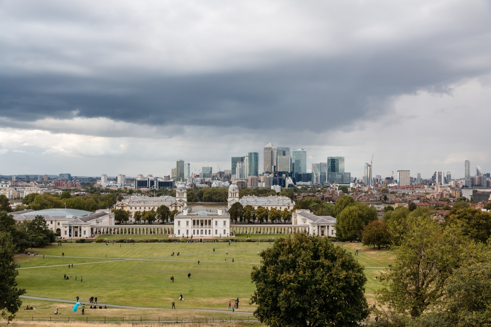
Un veliero da tè, il parco sul colle e, dall'altra parte del fiume, i grattacieli che si specchiano nei vecchi moli.
Perché andarci
Si arriva in battello, si sale su un colle, si attraversa il Tamigi in funivia e si finisce tra i grattacieli all'ora blu.
Greenwich è la Londra del mare: qui ci sono l'ospedale dei marinai disegnato da Christopher Wren, il museo della Marina e l'Osservatorio che ha dato il nome all'ora di tutto il mondo. Sull'altra riva, i Docklands erano i moli dove arrivavano zucchero, rum e tè; oggi sono diventati Canary Wharf, la città delle banche. In un pomeriggio si passa da una nave del 1869 a una stazione con un giardino sul tetto.
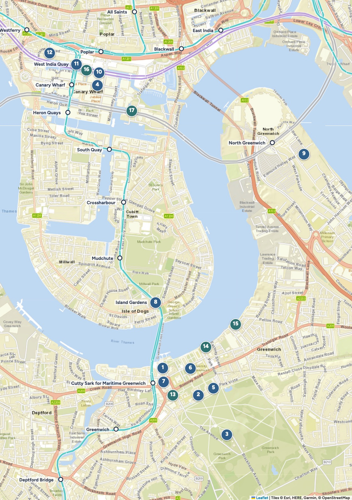
La mappa
Orientarsi
Greenwich è sulla riva sud: dal molo si vede subito il Cutty Sark, a destra c'è l'Old Royal Naval College, dietro il mercato e i musei, e più su il parco che sale fino all'Osservatorio. Canary Wharf è sulla riva nord, in cima all'Isle of Dogs, la penisola chiusa dall'ansa del Tamigi. Le due rive sono collegate dal tunnel pedonale, dalla DLR e, più a est, dalla funivia.
Cutty Sark, musei, parco, funivia e Museum Docklands sono aperti tutti i giorni. La Painted Hall è chiusa dall'8 all'11 febbraio 2027.
Il tramonto all'inizio di febbraio è verso le 17. Organizzate il pomeriggio al contrario: prima i musei, che fanno entrare fino alle 16:15, poi il colle, la funivia con le ultime luci e Canary Wharf quando si accendono le torri.
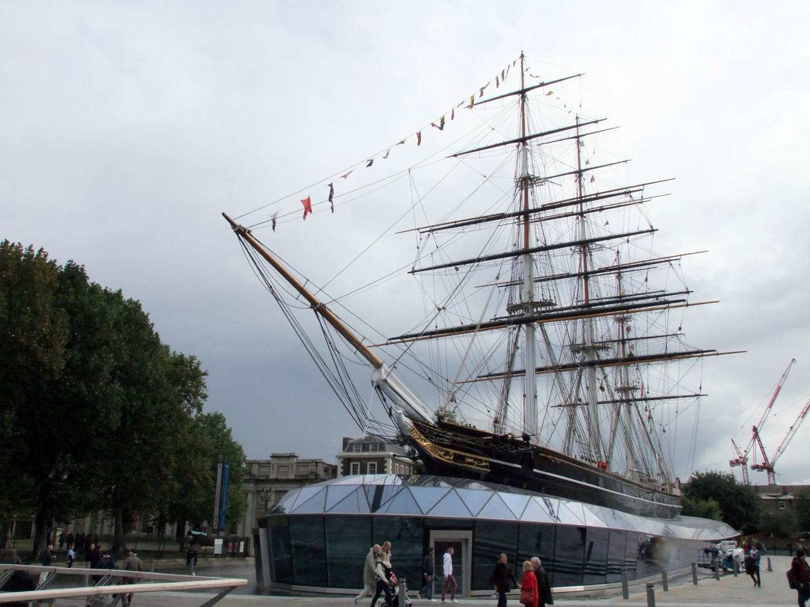
Top sight · 1
Un veliero da corsa: portava tè dalla Cina e lana dall'Australia, e oggi sta in piedi su un mare di vetro.
Fu varato il 22 novembre 1869 a Dumbarton, in Scozia, per la corsa del tè: in otto anni trasportò quasi 10 milioni di libbre di foglie dalla Cina a Londra. Poi passò alla lana australiana e, con il capitano Richard Woodget, fece la traversata da Sydney a Londra in circa 70 giorni. Il nome viene da una poesia di Robert Burns: cutty sark è la camicia corta della strega Nannie, che è anche la polena sulla prua.
Il 21 maggio 2007, durante il restauro, la nave prese fuoco. Per fortuna gli alberi e molte tavole erano già stati smontati: oltre il 90% dello scafo che si vede oggi è ancora quello originale del 1869.
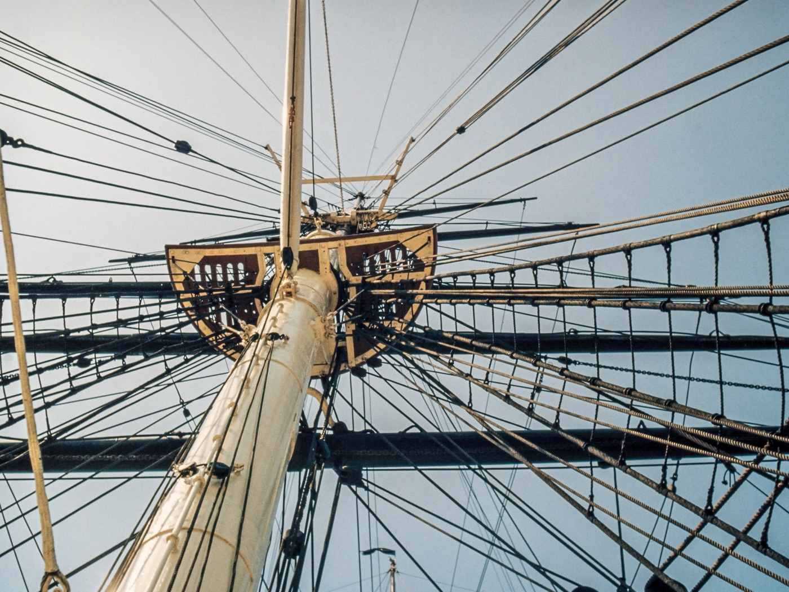
Dal ponte: gli alberi e le sartie del veliero, viste da sotto.
Si visitano la stiva, dove viaggiavano le casse di tè, e il ponte; poi si scende sotto lo scafo, che è sollevato dentro una teca di vetro: si cammina sotto la chiglia, come in un acquario rovesciato. Lì sotto c'è anche la collezione di polene più grande del mondo.
Non comprate il Day Pass dei Royal Museums Greenwich (£38 adulti): metà del valore è l'Osservatorio, che a febbraio 2027 è chiuso. Prendete solo il biglietto del Cutty Sark. La scalata delle sartie (Rig Climb) c'è solo d'estate.
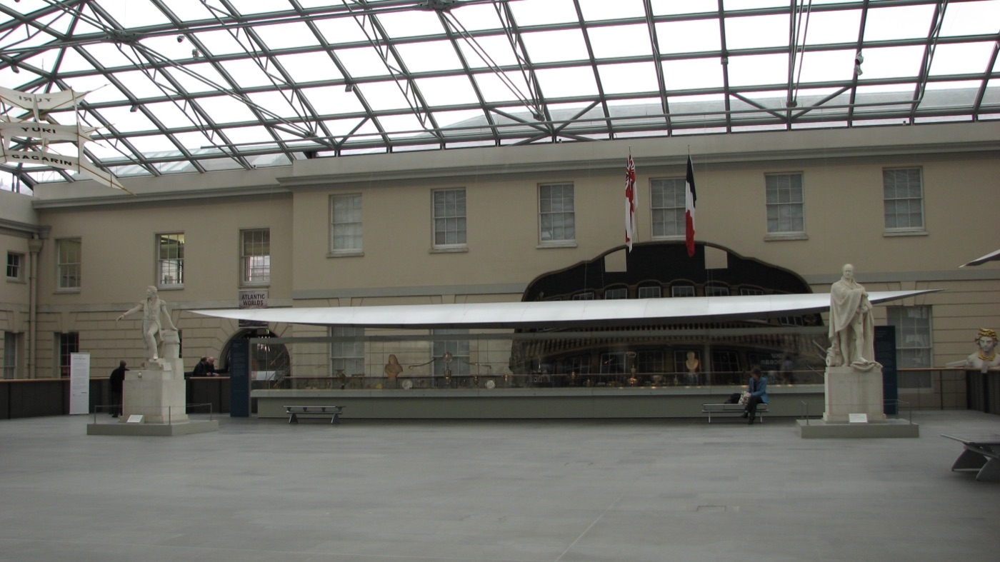
Top sight · 2
Il museo del mare britannico, gratis: esploratori, battaglie, navi e una mappa del mondo da attraversare a piedi.
Nella grande corte coperta, la Great Map è una carta del mondo stesa sul pavimento. Nella galleria Nelson, Navy, Nation c'è la giacca che l'ammiraglio Nelson indossava a Trafalgar, il 21 ottobre 1805, quando fu colpito a morte: il buco del proiettile è sulla spalla sinistra, accanto alla spallina.
Con l'Osservatorio chiuso, l'astronomia si è spostata qui: Astronomers Take Over è una galleria interattiva (si guida un rover su Marte) con un planetario provvisorio. Lo spettacolo Cosmic Journey è dagli 11 anni, quindi va bene per tutte e tre. Galleria più planetario: adulti £18, ragazzi £16, circa £140 per noi 8; solo galleria £8. Giorni e orari variano: da controllare sul sito.
Le macchie sulla giacca di Nelson non sono sue: sono il sangue del suo segretario, John Scott, ucciso un'ora prima accanto a lui. Il principe Alberto la comprò per 150 sterline e la regalò a Greenwich nel 1845.
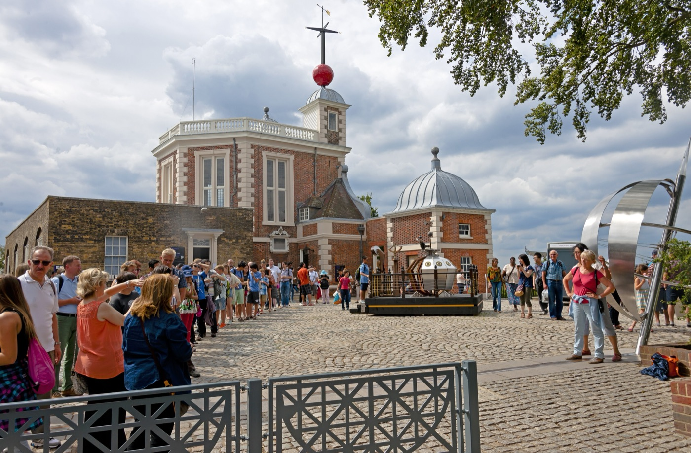
Top sight · 3
Dieci minuti di salita ripida, e tutta Londra si apre davanti: le cupole di Wren, il fiume, i grattacieli.
È uno degli otto parchi reali di Londra. Il punto panoramico è accanto alla statua del generale Wolfe, regalo del Canada nel 1930: da qui la Queen's House e il Naval College sono in primo piano, Canary Wharf e la City sullo sfondo. Più a est giace il tronco della Queen Elizabeth's Oak, una quercia nata verso il 1290 e caduta nel 1991; si dice che sotto ci ballassero Enrico VIII e Anna Bolena.
Dal 2 novembre 2026 il Royal Observatory, con la linea del Meridiano e Flamsteed House, è chiuso per i lavori del progetto "First Light". Il cortile del Meridiano riapre nell'estate 2027, con biglietti in vendita da gennaio. Se durante i lavori la palla del tempo rossa sul tetto continuerà a cadere alle 13 in punto, come fa dal 1833, si vedrà dal parco: da verificare.
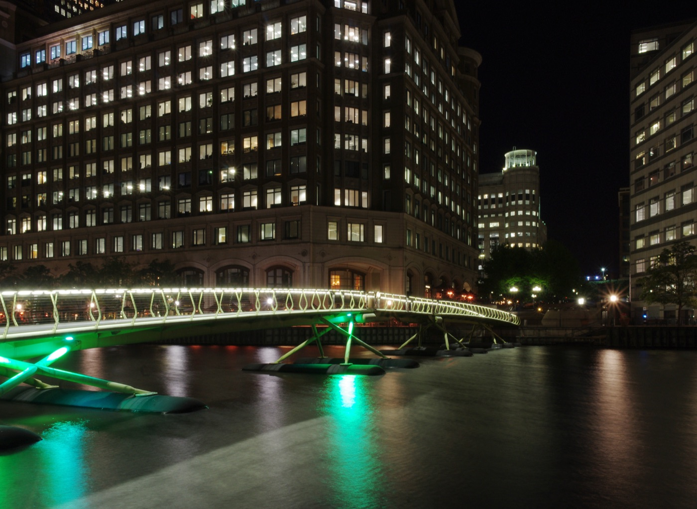
Top sight · 4
Dove arrivavano le navi dai Caraibi, oggi ci sono banche, torri di vetro e passeggiate sull'acqua.
Il momento giusto è l'ora blu, la mezz'ora dopo il tramonto: a febbraio, più o meno dalle 17:10 alle 17:40. Le torri si accendono e si specchiano nell'acqua ferma dei vecchi moli. Il giro più bello è sulle passeggiate lungo il Middle Dock e il South Dock, fino a Wood Wharf.
Un giardino pensile sotto un tetto di legno a graticcio, disegnato da Foster + Partners e aperto nel 2015. Si sale dai centri commerciali con le scale mobili. Gli orari attuali non sono pubblicati: di giorno è aperto, la sera da verificare.
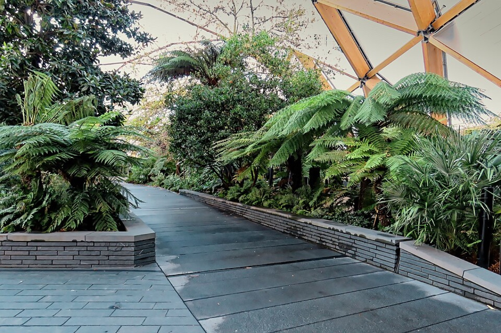
Se piove, ci si ripara nei centri commerciali intorno a Canada Square. Il festival delle luci Winter Lights si fa di solito a gennaio e dovrebbe finire prima di febbraio: da verificare.
Da vedere
La villa bianca disegnata da Inigo Jones dal 1616 per la regina Anna di Danimarca: il primo edificio classico d'Inghilterra. Dentro c'è il ritratto di Elisabetta I dell'Armada e la Tulip Stairs, la prima scala a chiocciola senza sostegno centrale del paese. Nel 1966 un pastore la fotografò vuota, e nella foto sviluppata comparve una figura incappucciata: la leggenda del fantasma nasce da lì.
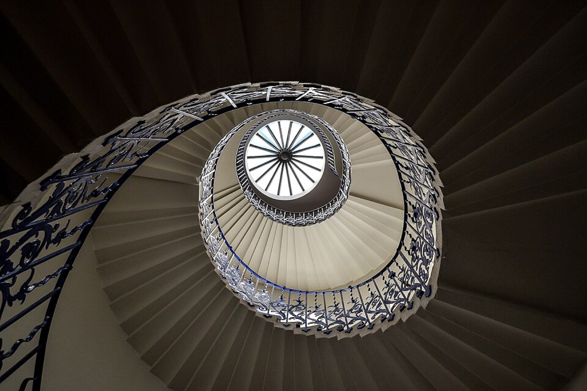
Le due cupole gemelle sono di Christopher Wren: dal 1696 era l'ospedale per i marinai della Marina. La Painted Hall fu dipinta da James Thornhill in 19 anni, dal 1707 al 1726. Aperta 10-17; chiusa dall'8 all'11 febbraio 2027. Fino a che età entrano gratis i ragazzi è da verificare.
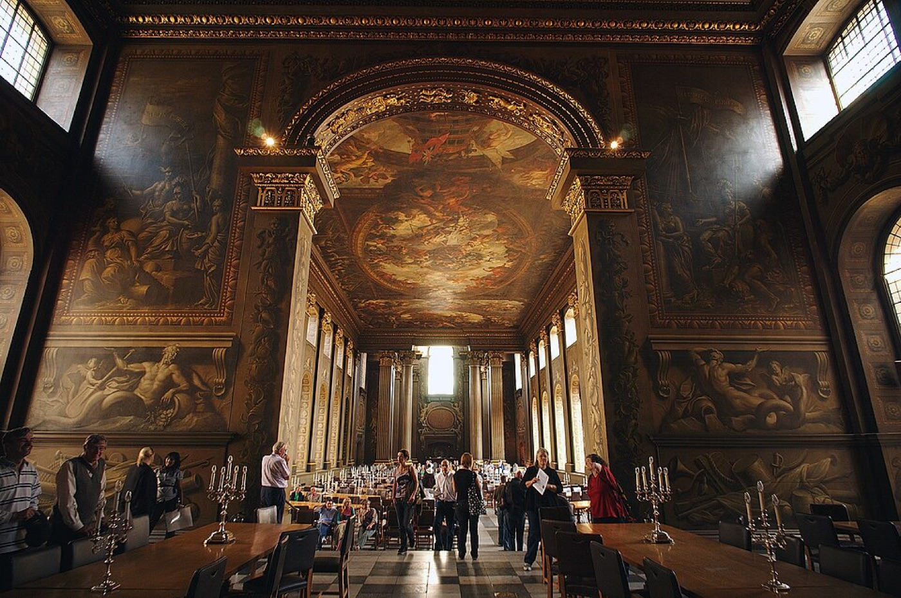
Un mercato al coperto nel centro di Greenwich. Lunedì, mercoledì e nel weekend arti e artigianato; martedì, giovedì e venerdì antiquariato. I banchi di cibo fissi (pho, hamburger, le ciambelle di Crosstown) sono aperti tutti i giorni; lo street food all'aperto c'è solo da marzo a novembre. Chiuso i primi sei lunedì dell'anno.
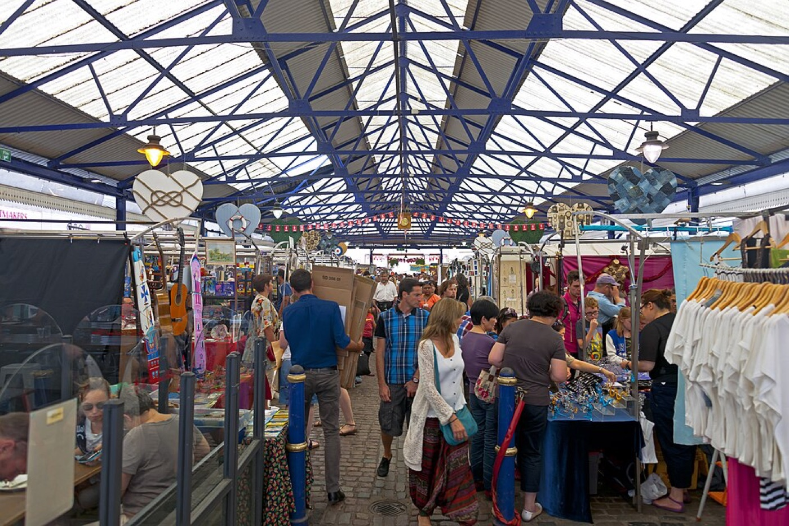
Dal 1902 un tubo di piastrelle bianche lungo circa 370 metri passa sotto il letto del fiume. Si scende con l'ascensore o per le scale, e dall'altra parte si esce a Island Gardens: da lì c'è la vista classica del Naval College, con la Queen's House inquadrata tra le due cupole.
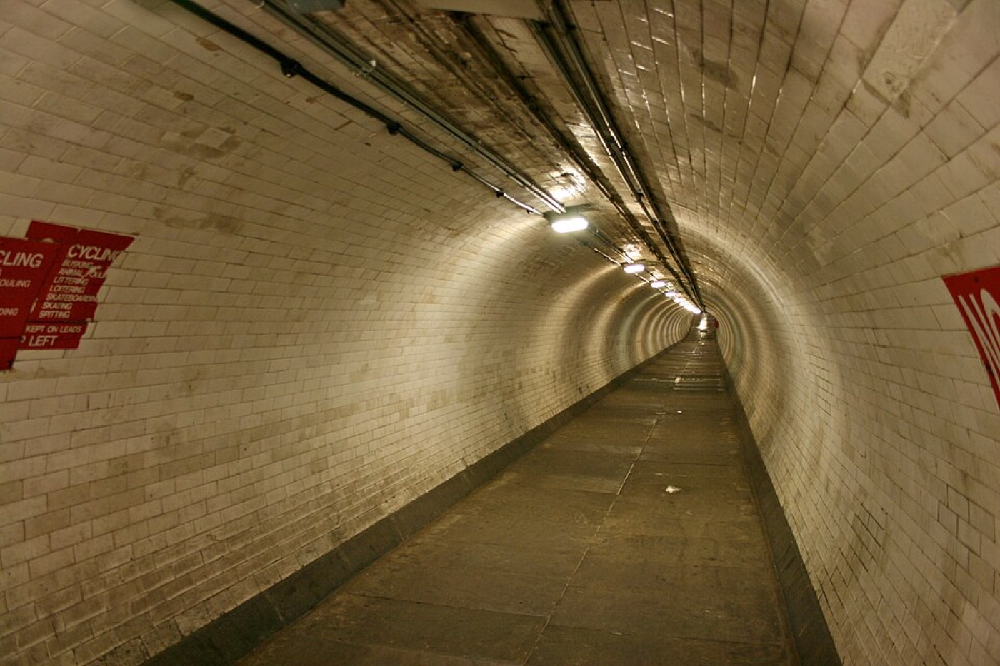
Cabine da dieci posti che passano ogni trenta secondi, a circa 90 metri sopra il Tamigi: in otto si sta in una cabina sola. La traversata dura fino a 10 minuti, con la cupola dell'O2 accanto e Canary Wharf di fronte. Per noi 8 solo andata, £49; andata e ritorno £94,50.
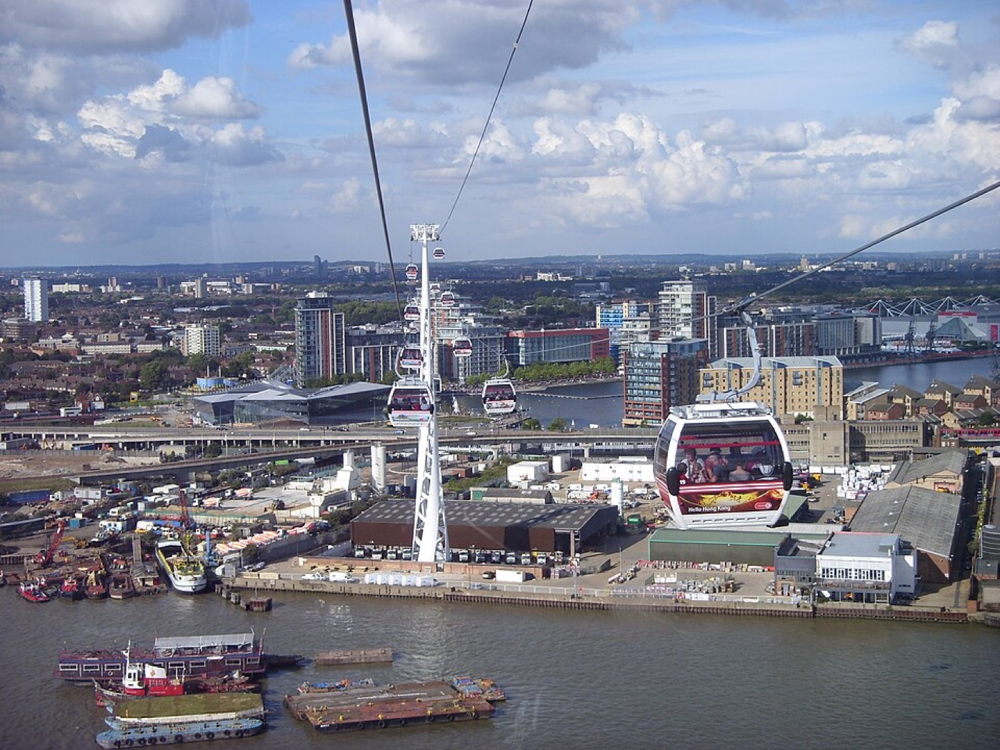
Salite in cabina verso le 16:45: all'inizio di febbraio il sole tramonta verso le 17, e le torri di Canary Wharf si accendono mentre attraversate il fiume.
Il bus 188 va da Greenwich alla stazione di North Greenwich in 15-20 minuti; oppure si prende l'Uber Boat per una fermata, fino al molo di North Greenwich. Dall'altra parte, la stazione di Custom House è a circa 10 minuti a piedi: da lì l'Elizabeth line porta a Canary Wharf in una fermata.
Dei nove magazzini di mattoni costruiti tra il 1800 e il 1804, ne restano due: gli altri li hanno distrutti le bombe della Seconda guerra mondiale. Una legge del 1799 obbligava a scaricare qui tutto il rum, il caffè e lo zucchero delle Indie occidentali. Dal ponte galleggiante sul dock si fotografano i magazzini con le torri dietro.
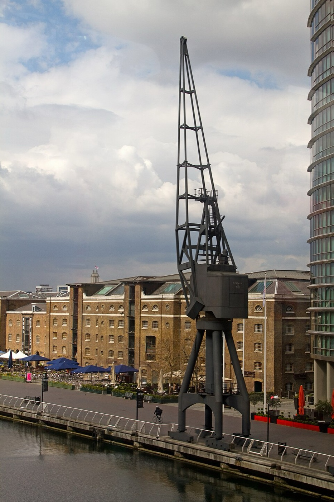
Dentro uno dei due magazzini superstiti, la storia del porto di Londra in nove gallerie. Alle ragazze piacerà Sailortown, una strada di Wapping del 1840-50 ricostruita al buio, con i rumori e gli odori. London, Sugar & Slavery racconta il ruolo di Londra nella tratta degli schiavi, proprio nel magazzino dove arrivava lo zucchero. La sala giochi Mudlarks è per i bambini sotto gli 8 anni.
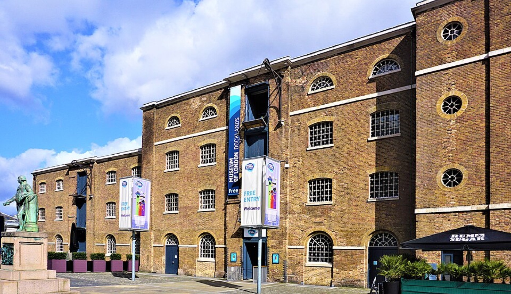
Tutto al coperto e gratis: il National Maritime Museum e la Queen's House a Greenwich, il London Museum Docklands a West India Quay, e i centri commerciali di Canary Wharf per la cena. La funivia con la pioggia vale poco, e con il vento forte si ferma: in quel caso si torna con la DLR.
Il National Maritime Museum, la Queen's House, il London Museum Docklands, Greenwich Park con la vista dal colle, i cortili del Naval College, il tunnel sotto il fiume, il giardino sul tetto di Crossrail Place e le passeggiate di Canary Wharf. Si paga solo il Cutty Sark, i trasporti e la funivia.
Passeggiata
Circa 4 km a piedi più battello, bus e funivia · un pomeriggio dalle 12:30 · tutti i giorni
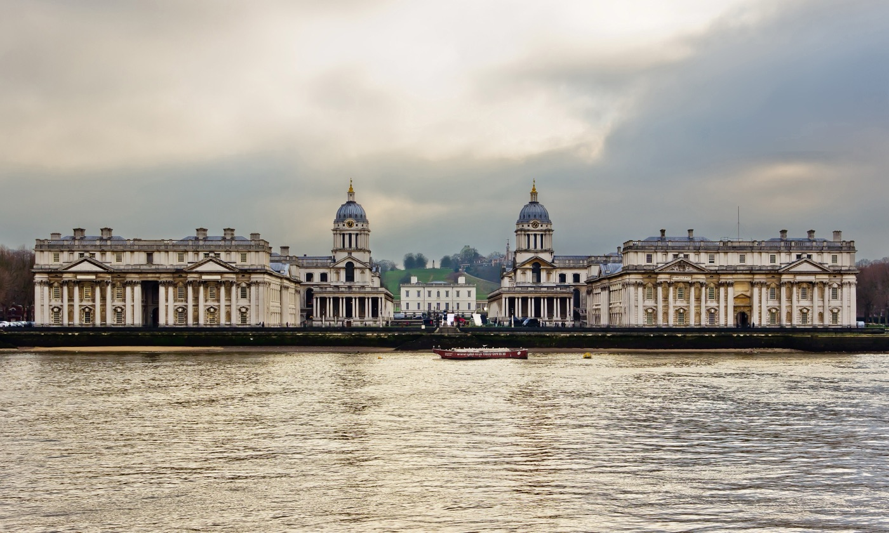
Saltate il colle e la funivia: dal Greenwich Pier l'Uber Boat va diretto al molo di Canary Wharf. Per tornare in hotel, una sola fermata di Elizabeth line fino a Whitechapel.
Mangiare
£ meno di £12 a testa · ££ £15-30 · £££ oltre £40. In otto, conviene sempre prenotare.
Pie and mash dal 1890: torta salata di carne, purè e la salsa verde al prezzemolo, il pranzo dei portuali. Un centinaio di posti, veloce ed economico. Se accettano prenotazioni è da verificare.
Un pub del 1837 con le finestre sul Tamigi. In epoca vittoriana i ministri ci venivano a mangiare i pesciolini fritti (whitebait), e Dickens ci ambientò un pranzo di nozze in Il nostro comune amico.
Pub georgiano su tre piani, con la data 1795 sull'insegna e i tavoli sul fiume. Più tranquillo dei pub del centro di Greenwich.
Barbecue americano e astice, rumoroso e allegro: alle ragazze piace. Ha una sala privata fino a 26 persone.
Cucina in stile caffè di Bombay, 355 posti su due piani e una terrazza sull'acqua. Prenotazioni per gruppi solo in alcuni orari: da controllare.
Le ciambelle ripiene di Crosstown, al mercato. Nei negozi del Cutty Sark e del museo, la copia del Shepherd Gate Clock, l'orologio a 24 ore del 1852: a mezzogiorno la lancetta delle ore punta in basso.
Il consiglio di TikTok
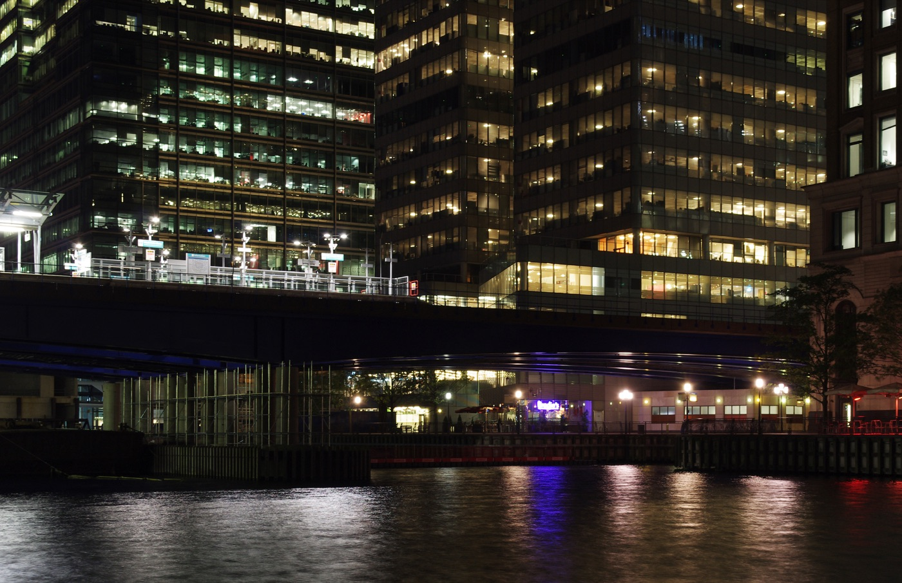
La vista sui grattacieli dalla banchina della DLR di West India Quay. Se il treno arriva vuoto, sedetevi davanti: la DLR non ha conducente e il vetro anteriore è tutto per voi.
Canary Wharf rende al massimo subito dopo il tramonto, verso le 17 a febbraio, quando le torri si accendono e l'acqua è ancora chiara.
La funivia è un giro breve con una gran vista. Il battello si compra in app, perché al molo costa di più: fino a Canary Wharf passa davanti a tutti i monumenti.
Dai video di @thevisuallife, @juanfraanuree4_, @claudia____1992, @seeyoutofantasyland e @jolieg0, raccolti dal gruppo a ottobre 2026.
Prima di partire
Più il ritorno con DLR o Elizabeth line. Senza il planetario, £297,50. Prezzi di ottobre 2026.
Crediti fotografici
Foto da Wikimedia Commons, pubblicate con licenze Creative Commons o in pubblico dominio. Mappe: Esri, HERE, Garmin e i contributori di OpenStreetMap. Linee della metro: OpenStreetMap.